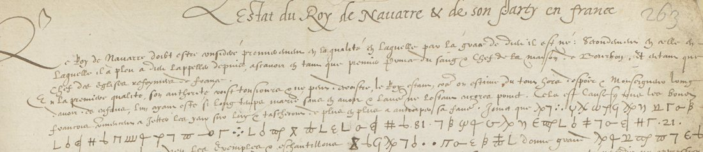
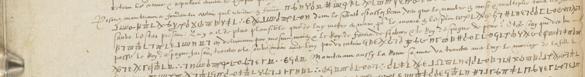

At a glanceCiphertext-only break · none (key obtained, text not read)
- The document
- A French political memoir, L’Estat du Roy de Navarre & de son party en France, dated after 1580. The catalogue paired it with R8501 as “unknown sender to unknown recipient”; R8501 is a separate Stafford despatch (Stafford, 20 August 1586).
- Where
- Harley 1582, DECODE R8505; no key or decipherment on DECODE, in the volume’s other records or in print.
- The cipher
- A homophonic cipher of about 3,600 symbols over four sides.
- How it was read
- Key recovered from the ciphertext alone, with no crib. A control on real French failed the same way as the first runs, so the fault was in the solver. The recovered alphabet had no m or b, which exposed a transcription error: dot groups are m, a closed oval pierced by a stem is b.
- What it says
- The prince of Parma, a party of malcontents, an Italian engineer at Lisbon, Beaucaire, Béziers, Carcassonne, Montmorency, d’Épernon.
- Still open
- The ten nomenclator numbers, which are names, and about 5% of scattered characters where the ink is faint or two shapes cannot be told apart.
01 Two records, one deciphered at the time
The catalogue item covered DECODE R8501 and R8505, both in BL, Harley MS 1582, both “Non-decrypted” on DECODE (for R8501 this is wrong: a contemporary decipherment exists). Harley 1582 is a made-up volume of state papers, and the two records have nothing in common but the shelfmark.
R8501 (ff. 71–72) is cipher in a Stafford despatch of 1586 whose contemporary decipherment is written out in clear on f. 72r. That page was transcribed, and Stafford’s key rebuilt from it, for the neighbouring letter: see Stafford to Walsingham, 20 August 1586. Nothing there is open.
R8505 (ff. 263–264, four images) is the subject of this page.

02 What the memoir is
The clear French, which is most of the four sides, surveys Henri de Navarre as a political asset. It gives his two “qualitez”: first prince of the blood, so that his authority can only grow while the king has no children, and chief of the reformed churches of France. It then lists the places he holds and their garrisons in Guyenne, Languedoc, Dauphiné and Provence, the counts and viscounts of his following, the harquebusiers each region can raise, the Catholic party, the German and Swiss alliances, and the marriage question. Internal dates run to 1576, 1577 and 1580; La Rochelle, Brouage and Saint-Jean-d’Angély are current concerns. That places it among Navarre’s embassies to the Protestant powers in the early and middle 1580s (this repository holds the numerical cipher of one of them, in Ségur 1585–86), and explains how the paper came to rest in an English secretary’s file.
03 The cipher, and the letter written as dots
A homophonic alphabet of about fifty graphic shapes (Greek-looking and geometric forms, written spaced out symbol by symbol with no word division), plus ten nomenclator numbers written between dots (6, 21, 26, 36, 51, 57, 72, 81, 99, 721), which are names and are not decoded. The frequent letters have three to six homophones each and the rare ones one symbol each, an ordinary chancery design of the 1580s.
| letter | signs | letter | signs |
|---|---|---|---|
| a | lunate ε, ψ, ∂, ∅, ъ-with-cup | m | the dot groups (two, three, four dots) |
| b | φ (oval pierced by a long stem) | n | loop-foot stem, σ |
| c | ⌠, reversed L, crossbars, + | o | Π, three-legged Π, &Sha; |
| d | #, ⨺, ≢ (three bar-shapes) | p | hourglass |
| e | L, 7, Γ, I | q | c+y ligature, plain ω |
| f | stem with a dot cluster at its upper right | r | ω with a bar, the same crossed |
| g | square bracket, square U | s | two-bowled ε, η, R, Ƶ, II … |
| h | Ω | t | β, crossed ε, ωſ, F |
| i | ∂-loop, 9-shape, y, c, V | u | ъ, long-s, ϝ |
| l | χ, χ with a hanging o | y | v |
The dot groups are a letter. Every earlier transcription of these pages, the first pass here included, took the clusters of two, three and four dots for punctuation or word division and dropped them. They are the letter m, which is why the first recovered key had no m. The controls: 7 Eb :2 psi G o B Gm b Tu o wf = “et maintenant”, Xo psi :3 G B dd 7 = “l’amitié”, :4 PiG b n c Gm q wT ne L = “Monsieur de”. Two further pairs had also been merged: φ (b) with the tall long-s (u), as in “de beau|caire” and “d’une bonne armée”, and the two-bowled ε (s) with the lunate ε (a).

04 How the key was recovered
- The first attack failed. All four sides were transcribed (about 3,600 symbols) and run through a homophonic solver (simulated annealing) against the repository’s French language models. No French came out. Under English, Spanish and Italian models every language scored alike, the pattern of a solver that has found no key.
- A control located the fault. Real French was enciphered with a fifty-symbol homophonic key of the same shape and run through the same solver (
control.py). It failed in the same way, so the obstacle was the solver, not the manuscript. There were two faults: a Sukhotin vowel/consonant constraint that is wrong for a key of this shape, and a temperature scale far too small for log-probability differences of this size. With both corrected the control recovers 100% of its key, and still 95.5% of its characters when 15% of its symbols are randomly corrupted. Transcription noise at the level this manuscript produces is therefore tolerable. - The key of the manuscript. The corrected solver returned French at once (“et qu’ils attendent”, “à l’avenir”, “duquel”), and basin-hopping with a word-segmentation objective recovered the alphabet.
- The key corrected the transcription. A French key with no symbol for m and none for b is impossible. The images were checked again, and the dot groups, φ and the two epsilons accounted for the gap. ff. 263v and 264v were re-transcribed symbol by symbol against the key, changing 29% and 31% of their symbols. On 23 October 2026 f. 263r was re-read on the better images of DECODE R8010, a duplicate record of the same leaves.
05 The decipherment
The whole memoir, clear text and cipher together with holes marked, is in R8505_reading.md (with English), rebuilt on 23 October 2026. DECODE R8010, a second record of the same leaves with better images, was found that day: f. 263r was re-read sign by sign on it (eight labels corrected), f. 264r compared with it, the clear French of ff. 263r, 263v and 264r transcribed in full, and the versos found to have been labelled the wrong way round (the Languedoc side is f. 263v, the side with the Lisbon engineer f. 264v). The memoir is still decoded, not read: f. 263r builds sentences, but the cipher clauses of ff. 264r and 264v do not (about half the sentences of the whole are clean). [?word] marks a doubtful word, […] an unread place, a bracketed number a nomenclator name. The cipher carries what the writer would not put in clear: a Spanish drift, a marriage, an army of reiters, and the people who might be bought.
- f. 264v: “… c'est de se rendre ou [?chef] ou instrument principal de la ruine de ceus de la religion, come ainsi soit qu'il ne peut [?desguiser] ce faict …”; “… avec le prince de Parme pour lui rendre les places …”; “… frere craindra qu'il ne releve contre luy un parti de malcontens …”.
- f. 264v, one passage with its clear context: “Et je scay que des l'an passé le Roy d'Espagne faisoit traicter a la soubz main avec luy par un certain italien qui sert d'ingenieur a Lisbone, dont les letres me sont venues es mains. Maintenant aussi la Roine sa mere va traicter avec luy le mariage de sa fille [?de] Lorraine, pour le reioindre avec [?ceste] maison ennemie de la chrestienté [?et] particulierement de l'estat d'Angleterre, a quoi, veu les pratiques ordinaires de [?ceus] de Guise en Escosse, [6] doit remedier.” The prince in question is the one this paragraph discusses, whose mother is “la Roine”.
- f. 264v: “… se [?deffiant] du roi son frere qu'il [?ne] la charge d'une armee a sa devotion …”; “… sortir de la une [?armee] de reistres pour la ieter et espandre sur le pais de celui qui la voudroit troubler … tandis que le parti de ceus de la religion demeurera ferme en [72] …”.
- f. 263v, on Languedoc: “et maintenant iouissant de l'amitie estroite de Monsieur de Mon[?tmorency], auquel la leur est necessaire […] asseurer hors […] places de toute la province de Languedoc, qui est la plus riche e importante de toute la France, estant icelui asseure de Beaucaire sur le Rosne et de la seneschaussee de Besiers […] de Carcassonne”.
- f. 263r names Espernon in cipher (“Qu'ilz ont plongé devant Espernon et Ioieuse”), and f. 264r has “la guerre […] de nos provinces” among its unread clauses.
06 What stays open
95.1% of the 3,551 deciphered characters fall inside French words, measured by Viterbi segmentation against a 37,000-word vocabulary built from the repository’s French corpora. The measure is conservative: sixteenth-century spellings and proper names the vocabulary does not hold count as not deciphered. But it counts characters, not sentences: a word-division search finds short French words in a string of fragments. Read line by line, the cipher clauses do not build sentences (some lines of f. 263v are almost noise), so the memoir is decoded, not read (reading audit, 22 October 2026). The figure is kept as evidence that the key is real, not as a reading.
Two things are left. The ten nomenclator numbers are names. Three have contexts that narrow them: 72 is a country and almost certainly France (“la guere contre ceus dela religion en 72”, “demeurera ferme en 72”); 81 is a person and probably the King (“le 81 son frere”); 21 is a feminine noun, the League or the army (“21 ch[ar]gee dela guere”). None is fixed by the text. About 5% of the characters do not resolve into French words: faint ink, and shapes ambiguous within one family.
A note on method, since it bears on the figure. ff. 263v and 264v were re-transcribed symbol by symbol from the images against the recovered key. On ff. 263r and 264r the first-pass transcription was corrected only by a constrained pass. A token could be swapped only between shapes that the second transcription proved confusable (the dot groups and the f symbol, a stem with a dot cluster at its upper right, so a faint stem looks like a bare cluster; φ and the long-s; the two epsilons; the two stem-loops; χ and the hourglass; the three bar-shapes; the bracket and Π), and only where the word model gained clearly. That is 77 tokens, 2% of the text, each listed in emendations_all.txt so it can be checked against the manuscript.
Full texts
The transcription and the decryption of every document on this page, so that the reading can be used and checked. Short files are shown here; all are in the repository.
R8505, "L'Estat du Roy de Navarre et de son party en France" (Harley MS 1582 ff. 263-264) decoded, not read
A French political memoir, written after 1580, surveying Henri de Navarre as a political asset for an outside reader: his two 'qualitez' (first prince of the blood, chief of the reformed churches), the places and garrisons he holds in Guyenne, Languedoc, Dauphiné and Provence, his following, his alliances and the marriage question; it belongs with Navarre's embassies to the Protestant powers in the mid-1580s. The cipher carries the sensitive clauses inline in the clear French (d'Espernon, Beaucaire sur le Rosne, Besiers, Carcassonne).
A mechanical decode with holes in most sentences: shown so that the transcription and the key can be checked and improved, not as a reading.
Transcription
1.1|sa faveur. Joinct que| Xo 7 : psi X wf G Xo n U Gm o B |(cont.) 1.2|(line start)| L b d # b Br sh q f 7 w o Gm : L b wf hg wT L E3 L o d # T #81 7 B f q u Xo n E wf L b ne 7 o Eb H Gm #21 |(end) 1.3|(line start)| Oi X psi f Gm o dd w |vers les exemples et eschantillons| 1.3b|eschantillons| hg T G Xo 7 b : Pi o E3 B wT L |donne grand| 1.3c|donne grand| Xo q U wf w 7 E T |(end) 1.4|(line start)| #51 ne f cy T L Xo |personne n'a occasion de se plaindre et auquel nul ne peut 1.5|Il a tant paty| PiG f # 7 E b Pi q T L Oi f F dd : hg sh n ne q #81 Pi f # L E : psi b Usq Gm w dd Gm U # Gm E3 |(end) 1.6|(line start)| B wT Pi q hg Gm n ne L #21 w0 T u Xo II |ont suivi a une haine 1.7|quon a se plaindre de| Eb PiG q E3 : Pi wT U cy f 7 ne L Xo T y |. 1.8|Et y a apparent qu'il a eu| q L T : 7 E3 : Gm U |(end) 1.9|(line start)| X L # 7 n ne E G b I # L E dd b Eb w Gm n |la plus part la recherchent et prendront goust a luy. 1.10|est lors que| Eb Pi f E3 + 7 U G b dd w0 T Gm n 7 wf sh o 7 w Gm f U L # G + B I E3 7 U Pi o Eb eq psi G Tn wf Gm B phi q 7 X L U hg E wT Xo 7 : L o wf II |(end) 1.11|Quils ont plonge| ne Gm f E b d 7 n hg L wT o Pi o 7 wf dd sh y Gm T E3 L + Pi : L Tn psi? b Gm? E |(end) 1.12|(line start)| b 7 psi d f Oi w q L B I |. con endure nulle vergongne 1.13|aussy bien| psi Xo X dd L 7 d E X f y : 7 ne L Om PiG w E3 X L wT sh v E q : 7 Tn Pi : 7 u Xo L n wf phi G L o : I sh b ne Gm H 7 # E b U |que plusieurs personnages
Transcription
2.1|peussent Joindre selon a Allemagne| ti 7 hg L o ne psi b B o 7 Xo E dd n E3 Gm b wf # Tu q PiG T wT q b sh w ne wT L 7 B T o 7 II eq Pi w : 7 ne L J sh b # f G q Gm phi dd 7 o cy q L |� 2.2|(line start)| hg Xo T n E3 L ti w Gm B 7 L wf b V E X L d dd B tr sh o o PiG b G X o y psi dd wf psi q 7 Xo w0 q L Br Gm o wf dd Xo G sh : 7 J E hg psi phi X L | 2.3|(line start)| L d U o Pi dd psi Xo X L Tu q cy T Gm X E E ne w L n U 7 b d X Gm E3 psi II : E dd w L n w0 f G L o q b phi L U PiG o b Pi E3 Gm wT Pi dd B |� 2.4|(line start)| E3 f y q y Gm d Pi phi L y # Gm n E q wf w L U |Et dautant plus 2.5|les premiers susdits| V psi bx sh b PiG Gm dd X I 7 n B Tu phi Xo dd E |pour la direction des affaires de la religion| X Gm U 2.6|(line start)| w0 q 7 Xo II wT E hg PiG wT B L b d wf sh f q dd Tu T |Conseil du Roy de Navarre 2.7|des plus grands de la religion| X Gm w hg X 7 Pi | 2.8|(line start)| Gm o J 7 n B psi eq eq E dd w L |Chiffre ont este baillees pour secret entre les officiers| Xo L E J psi T U Gm E3 # 7 # L I : I G E b ti 7 # f wT 2.9|(line start)| 7 o wf L b J sh wT q 7 f G? w0 T 7 X Gm #? o ti d b 7 E3 B L F 7 J f d L 7 o f o II T X Tu wT B dd J Xo 7 T Gm f w0 q 7 # L wf sh f B L U Xo L E3 |� 2.10|(line start)| J PiG b B wT E phi L o d G Pi o E3 sh o n L hg X psi dd o B L o T E u b phi T X L E3 # 7 Xo Pi V Tu f d L II cy T Pi b q sh dd wf B Pi b E X Gm n o PiG T w E | 2.11|(line start)| hg wT Tu B dd w0 f L w E X L T # wT PiG G wf ne 7 J Gm T U H L Xo E w Gm Xo dd Br G sh b f 7 q E T n U V X L n hg w L hg psi wT Tu B T : E3 7 d X Gm T U | 2.12|(line start)| n w0 T G dd E n Gm : PiG b B Gm o n q y n E3 7 L B E X 7 : E Br b 7 X L U : q o dd B G Pi b n cy T T E E : psi n U 7 o B Tu Xo o Pi b hg sh q wT | 2.13|(line start)| tr PiG T X Gm wT d PiG q B E J sh f hg hg E w X 7 wT Om Pi n b 7 L b Gm wf X L E3 B w Pi T hg L n f o T G E3 L o T PiG V L b B Gm o Usq E E3 J Pi b Br o 7 X q dd E | 2.14|(line start)| ne sh b J w0 q 7 X L E3 tr E f n L n # 7 # L eq dd psi b ti 7 # T w L o B Gm eq T X wf o hg X dd Gm b wf X E wT psi dd U PiG b # 7 Xo L E wT 7 d L o dd w | 2.15|(line start)| tr 7 : 7 T w I hg psi wT I? dd X Xo 7 : 7 b B L o U PiG b Gm o B dd Gm w |. Mais tout ainsi 2.16|En la juste occasion que nous avons| # Gm ne dd : 7 w Gm wT X E w L o # o B G PiG T # 7 n ne dd B Gm E3 hg Xo E tr 7 U E3 dd PiG b n L phi sh dd PiG G B |� 2.17|(line start)| psi n U L f w Gm # T b Gm phi sh b o 7 E wT : 7 L ne L wT Gm o n d w L E w0 q dd hg Gm T n B d Gm o dd w Xo E J psi : hg Tu Br b 7 L wf Gm n X sh dd Usq dd Gm | 2.18|(line start)| X E Br f L w wT L # b tr 7 b wf wT L # 7 b sh U hg wT PiG T dd o 7 E q 7 w E3 X E J dd w tr Pi o : Gm w L o F 7 # L X psi eq wT Tu o ti 7 |Je feray 2.19|aise de se resouldre| psi # o eq 7 w L wT Xo E wT Gm : dd U L # o ti 7 X L E3 7 B w0 q Tu o ne b PiG n 7 b o L : G E3 |s attireront que leurs 2.20|le soulagement ... fardeau et le suis tout ensemble.| E dd X b 7 T PiG o B hg Xo T n J Xo E dd w E q U? 7 tr Pi T wT E3 # 7 # L u sh wT U PiG f G Xo b E f L T o q E w0 T 7 n psi hg w L U 7 b B dd Xo n L |� 2.21|(line start)| wT 7 E3 Pi T ne w E |par advis des Eglises de France ... la volonte de son ennemi| hg f y n G q dd X b 7 |� 2.22|reddition des places, toutes toutes nous contes (next line)| Xo E hg 7 T B w L wf L o dd w hg psi wT hg Xo T n eq PiG wT B L E3 7 d E n U 7 q w L 7 n : |Et abregera ... Samson ... la gueule 2.23|du lion mesmes| E dd X L n : sh G L o E3 Xo T y U PiG b d w L eq f n L II hg E w J Gm T U hg sh T w Xo E J Pi o n 7 w f E B dd PiG b # Gm U? | 2.24|(line start)| cy T b 7 X I dd Xo b 7 B w psi b w0 T X Xo 7 Br T 7 wT L E : PiG dd b Br n w0 f L hg sh T wT Xo E E3 G L o b 7 L B cy T d L o Xo Tu E o 7 b 7 b 7 o 7 n sh o | 2.25|(line start)| Usq f L w Gm E : PiG o T U dd o wf L w Gm n E3 L II phi T L X q V |. (end of letter)
Transcription
3.1|a mesure que ses ennemis se rallient| E3 sh dd b Gm o X L f w 7 b Eb wT L B 7 o E T w L n f n + dd B psi b wf # 7 E3 L F # G + 7 n L B dd wT psi f y b Usq w0 q dd # G T 7 w |(line end, right margin) [y=282] 3.2|(line start)| w dd n R 7 b B Xo 7 T wT L n hg w u B 7 Eb Xo 7 T w E3 :3 sh dd Gm b n E Xo Gm T w n |les plus grands princes de la Chrestiente| J PiG :3 :3 7 X L #36 #81 |Et l'alliance par ladite d'un [y=301] 3.4|brac[?]e a[uec] cite[?] Catholiques (faint)| Gm B L n hg sh T n 7 w E X 7 E3 psi eq eq L tl B G o Pi b n L eq d J B dd sh o E # T hg psi X L w0 q dd ne Pi w Gm E3 L o d f psi b wf X Gm :2 7 w E n PiG b phi w psi n |(line-fill dash, line end) [decodes: etesl-ouseralea-atmtm-ectinonsetm-action-adulale-quidoresenauant-lemerasonbras; "qui dores en auant le m... son bras" is firm, the first half is not] [y=551] 3.5|(line start; cipher begins at the left margin)| ne w sh dd # B Gm dd Xo 7 Br L + f B 7 T wT # 7 n Gm n hg Xo T n X Gm wT o q :2 dd I f cy? ne # L n n 7 dd b Br E |. (full stop; paragraph ends, rest of line blank) [y=566] 3.7|Religion. Il ne s'y peut plus fier: Et se voyant forclos de ce Party, il voudra s'appuier d'vn autre ou il y aura a la besongne| J Gm n B # 7 n L w 7 b ne w L |(line-fill dash, line end) [decodes: cestdeserendre = "c'est de se rendre"] [y=592] 3.8|(line start; cipher fills the whole line)| sh f J Usq L I PiG T dd o n Eb wT f :3 7 b wf hg wT dd o + G hg E Xo # 7 Xo psi w T G b 7 ne L tl Gm T II # Gm X d wT L Xo u Br G sh b J Pi :4 L E dd b n G R PiG dd Eb cy T G X o L |(line-fill dash, line end) [decodes: oucgetm ou instrument principal de la ruine de ceus de la religion come ainsi soit quil ne] [y=603] 3.9|(line start; cipher fills the left half)| hg L f B # L E3 Usq f dd R 7 w J Gm eq psi dd + B ne d o T 7 w n E f B wT L :3 7 b B |Execrable envers tous hommes qu'ils s'agissent en zele e y r[?]auoter sua a q[uelque] [decodes: peutde(s)guisercetmaictdanuersautrement; first sign hourglass (hg) not chi; the E after "L" is where the plaintext wants s - see header note] [y=615] 3.10|...pour que ce fust le party de sa Religion de sa gl[oi]re o[?] est notam[m]ent q[ue] sans la vi[ctoire]| # L :3 PiG b n dd Gm T w ne L f Gm Xo q Gm T wT 7 o X psi Xo sh dd d B w E c wf . L wT |(line end) [decodes: demonsieur de uelueur en la loi a trait.er - "de Monsieur ..." is firm, the rest not] [y=628] 3.11|(line start; cipher fills the whole line)| d f L + X L hg wT c b tl 7 # L hg E w :4 7 hg PiG q wT Xo f y wT 7 o # w L Xo 7 R hg Xo E tr 7 E3 psi T dd Xo wf L o U dd d psi b Br L n q d d B I J Gm I U T dd Xo Xo f y |(line end) [decodes: auec le prince de parme pour luy rendre les places a-auil tensia... ; "auec le prince de Parme pour luy rendre les places" is firm] [y=640] 3.12|(line start)| J u n n T d ne psi |pour sauuer les personnes qui ch[?] en r[?]s[?]m este ch[?] i any[?] [decodes: cissnada - does not read; the old ct had "J o R n T d ne psi"] [y=653] 3.16|Personne maintenant a fondement certain quil retiendra en France -| Pi T n psi o R # sh q Eb L Xo L w PiG psi E # o eq wT Gm wT L tl w d G o # w E w0 f dd Xo o 7 wT L X 7 q L |(line end) [y=790] 3.17|(line start)| J sh o B wT L Xo T y , f b hg d w B psi ne L :3 E Xo J sh b wf L o n |dont le subiect estant beau, veu que le nombre e croist e multiplie tous les jours [y=806] 3.18|soubz lestat present: Luy a il de plus plausible que de luy mettre en main, pour le moins en lesprit| w0 f L X w0 T 7 # L n E3 7 dd b Br L o d o Br Xo 7 |(line end) [y=821] 3.19|(line start)| B 7 w wT L 7 wf L E3 J sh n R 7 |en delivrant par mesmes moiens e le Roy de France de s'embrouiller e le Roy d'Espagne de peine? Et Je scay que des l'an- [y=836] 3.20|passé le Roy d'Espagne faisoit traicter a la soubz main avec luy par un certain| G B E X dd 7 b cy T c n Gm w B # dd o Br L o G L f wT psi X c E3 phi sh b 7 ne Pi b wf |(line end) [y=853] 3.21|(line start)| Xo 7 E3 X Gm Eb wT L R :4 7 n sh b wf q L o T 7 E3 Gm R :3 E G b R |Maintenant aussi la Roine sa mere va traicter avec luy le mariage de sa fille [de] [y=868] 3.22|Lorraine| hg sh f w X 7 wT L G Pi dd o ne wT L psi T 7 J Gm n B L :4 d G R PiG b L o o 7 :4 dd L ne L Xo E J Om w L n Eb dd L o B 7 L q hg? d w B dd J f Xo c 7 wT L |(line end) [y=884] 3.23|(line start)| :4 L o B # L Xo 7 E3 wf E Eb # d b Br Xo 7 B L wT w L psi cy T PiG y q 7 f X 7 E3 hg w d wf c w0 f L E3 sh wT ne c b E G wT L n # 7 J Gm T Pi ne L Br T y E3 Gm L o 7 E3? J Pi |(line end) [y=900] 3.24|(line start)| R 7 #6 H Pi dd B wT L :4 7 ne G 7 w |(line ends short, rest of the line blank) [y=916] 3.25|Car quant a fu(?)| #21 J Usq L I ne L X E Usq f L w L + Pi b B w L tr 7 f II ne 7 Xo psi wT L X dd Br G PiG b L o #72 X 7 #81 n sh b eq w L wT 7 E |ses pratiques [y=928] 3.26|e Pour avenir se suspecte quil ne le laissera jamais tenir la campagne e France. Et d'autre part il se| ne L L eq dd 7 B E o wf # T w PiG y n Pi b eq wT Gm w L |(line-fill dash, line end) [y=938] 3.27|(line start)| w0 f dd X |ne prendra jamais| Xo E J Om psi w Br L ne T o L d wT :? 7 L |qui ne sont| d E3 E ne L f sh B c Pi b tl L cy T dd Xo T y d psi hg E w L o ne 7 w0 f L Xo 7 |(line-fill dash, line end) [y=951] 3.28|(line start)| wT PiG y Xo q y hg L w :3 L B 7 |(short line, rest of the line blank) [y=963] 3.29|(line start)| #57 n + E G dd Gm phi c 7 b |n'est pas si facile a vaincre? Mais quoy qu'on confesse aussy quelle est aisee a troubler| X L E3 q Xo :4 psi w dd d Usq Gm ne #721? |(line-fill dash, line end) [the final group is written between dots; it may instead be the sign 7 followed by the number .21.] [y=977] 3.30|aggreable aux uns ... partir le Pais en Ligue e mis la Court e au Conseil en combustion| J Gm n B wf d f wT L E3? B L f b hg wT dd o + 7 |(dash, line end) [y=1041] 3.31|(line start)| w0 f dd |sans les beaucoup examiner ... [y=1062] 3.32|maintenues? e savoir tousiours| E3 sh wT B dd wT ne L Xo d f o Gm T? wT :3 7 L # L wT 7 dd R wf w L E3 hg sh T wT Xo E dd L B 7 wT L wf 7 n hg d b ne wT L E3 f wT X 7 |(dash, line end) [y=1248] 3.33|(line start)| hg d dd R # 7 J Gm Xo f y w0 q dd |la voudroit troubler en elle. A cest effect savoir ... [y=1271] 3.34|que seule ombre e protestation de mariage �| wf d o ne dd n w0 f L X 7 hg psi wT B V ne L tl 7 q II # 7 Xo psi w L X dd Usq G sh b ne L :4 7 T wT L w psi eq 7 w :4 7 L o #72 L wf |(line end) [y=1398] 3.35|(line start)| 7 E #99 Xo Gm U #81 #36 E q w sh o B hg 7 T ne 7 :4 Pi V L o # 7 X q y :2 E Xo eq psi dd wf L 7 B hg Pi T w d u? o b 7 X L psi L o b 7 w L n q E3 d? Gm X L E T psi c E3 n 7 w T Gm w wf? L |(line end) [y=1413] 3.36|(line start)| Gm B hg Pi T w w? Xo 7 E3 #99 |Si dea la amendemens elle ait tenu la ligue que s'estoit touchant ... les choses ne fussent au poinct ou elles sont ... (line end; all clear after the run) [y=1427] 3.37|et celluy ou elle a est� tres marrie de les voir| PiG sh T E b ne E X psi :2 w T? o J Gm |Le Roy de Navarre ... (line end) [y=1443] 3.38|mieulx| 7 T w f w0 w? L Xo 7 psi Xo T q 7 w c c? B 7 b psi dd w w? E d T L n o V E3 7 X Pi b U T w0 cy T psi X q B L o y n L X X? sh b Xo E X 7 T w L X 7 Xo Gm E3 E3 psi f f T o ne Pi 7 n L E T w T G b L I |(line end) [PROVISIONAL] [y=1461] 3.39|(line start)| q L E3 Pi Pi Pi d d X 7 n psi X q b T q n E3 7 I Gm o B sh o B f b 7 b L Xo 7 T L T L n n w w L 7 7 Eb L o w d w d n L I Gm b c o X w T? sh V L y X L f w E3 7 b o T o 7 :2 G n X L E3 E :2 7 w w d sh o # 7 Eb L X Gm |(line-fill dash, line end) [PROVISIONAL] [y=1487] 3.40|(line start, x=468; the line above the brief's first line)| d o ne q 7 b Gm :3 7 o B L o X Gm T w n X Gm wf n PiG phi? Gm Usq? 7 w G? H L n X 7 L q w E |qui est gratuit ... honorable-| 7 b rho? L w n Eb Pi T E3 psi f B w L n L B o sh T rho? E d o 7 B b 7 |(line-fill dash, line end) [y=1499] 3.41|(line start, x=469)| w0 T psi X dd B Gm U cy T 7 G? # |Cela faut quy ne| E f sh n Gm B X X X q 7 n psi B Gm o ne w w L psi U sh b E :4 d b b G 7 L w0 T G X II Pi d T Eb psi o T w L F? Om 7 phi? L psi E3 L Gm 7 Gm o b 7 E |(line end, x~1292) [y=1515] 3.42|(line start, x=471)| E3 psi T? 7 b B n d X Xo T? V :2 I sh o? Gm? X Xo dd? n G w # L Xo T? L Pi eq w w0? wf X L rho? wf Usq? 7 w T G J Gm |On ... [blotted word] ... la Roine qu'elle a faict merveille e quelques (clear to the line end) [y=1531] 3.43|fois en reproche d'ingratitude. Mais elle se peut souvenir q depuis l'an 70| Gm X L T psi hg psi n H 7 Gm X Gm Br? # 7 b o # 7 b G L w X sh T? T? w L I? Gm? n :2 |(line-fill dash, line end) [y=1547] 3.44|(line start, x=471)| w0? T 7 |Jamais Je n'en di tam d'affect suy passe tam de peril. Et croy a quelle fin l'an 79 fins| :3? Pi b V L o T? psi o B Gm w B E G? d Gm? E3 f 7 n? |(line-fill dash, line end) [y=1580] 3.46|(line start, x=473; the whole line is cipher)| cy T d X Gm b B L E3 d w L 7 b n E 7 b? w f d 7 o 7 n dd? L E3 d? n E V b B d X L :2? 7 T w L :2 hg Xo sh d Gm L d X Gm T w E3 n d L n B J Gm w T L X X? L E cy? |(line end, x~1240) [y=1628] 3.47|ron so[n]uoir e plus estre [c]onuenoir puis n[a]tre quilz se conseruassent [i]aux tant aux mesmes sans auoir est honnuer(?) dy k[e] sa part .| L Gm wf # E E? Xo dd? E o? F? 7 E3? |(line end, x~1312) [y=1647]
Transcription
4.1|(line start; the clear above ends "...Item les pais de Toulouse")| 7 Eb :2 psi G o B Gm b Tu o wf dd sh f u n U E o Eb H L Xo psi :3 G B dd 7 Gm E3 wf w Pi u Eb L # 7 :4 PiG b n c Gm q wT ne L |(line end) 4.2|(line start)| :3 PiG o n u 7 T wT :4 PiG o :4 sh w L o J y E f cy T Gm Xo X d Xo 7 q wT L n Eb b Gm J L E3 n psi dd w L R? 7 X L T b 7 b B |(line end) 4.3|(line start)| E n U Gm T w L wT Om Pi wT E3 # 7 b Br PiG f T w PiG q n hg Xo E tr 7 E3 ne L B Pi T wf L X d hg w sh f dd o J Gm # L Xo psi b Usq T Gm |(line-fill dash, line end) 4.4|(line start)| ne Pi J w0 f u? L n wf |la plus riche e importante de toute la France| 7? R? Eb E b B G tr 7 Xo f V d E3 n L f w 7 H Gm phi L E f |(line-fill dash, line end) 4.5|(line start)| tr psi dd wT L n q wT Xo Gm w Pi E3 b L wf # 7 Xo E U 7 o Gm n J G Tu f E3 L 7 ne Gm phi L II dd L w n H L X L eq 7 o E3 # 7 J d wT |(line end) 4.6|(line start)| ti psi n E3 sh b o 7 ne T? Pi H L # Gm Xo L y tr E B Om 7 Gm Eb psi T w L E3 hg Xo Tu tr 7 n ne dd :3 hg PiG wT Eb E b tr L B psi o wf E f q b n |(line end) 4.7|(line start)| cy T 7 U E f o B Xo d o Usq q L H PiG J . |De ceste province vient de la Religion ... 4.8|... e maintenant y en a plus de cinq cent des familles| hg Xo f E3? dd # |(line-fill dash, line end) 4.9|(line start)| w n f q b Xo 7 E3 y U Pi B psi Xo E3 # L T sh Eb G sh o ne T wT Pi V # L b E3 Tu? E? wT w 7 :4 psi dd n |une seule circonstance e ... 4.10|... tenu les villes de Nismes e d'Arles haute e basse| 7 B J PiG T f L wT wT L :2 |(line end) 4.11|(line start)| Gm o Eb hg Xo q E3 dd 7 T Tu? w n E f Eb wT Gm U Xo Tu hg hg? w G b q G o hg E f B L ne sh w L o U Gm y L n wf T Pi V E3 dd o 7 |qui les a tousiours
Decryption: R8505_reading.md
Translation: R8505_en.md
L'Estat du Roy de Navarre, fols. 264r-264v, cipher passages, reading by Brice Dudout
A memoir in French on “the state of the King of Navarre and of his party in France”, written in the first person by a man of the Reformed party (“our provinces”, “the letters have come into my hands”) and kept among the papers of an English secretary of state, slips some hundred lines of cipher into its plain text. These are the sensitive passages: the secret organisation of the churches, the reasons for keeping the surety towns, Monsieur’s dealings with the Prince of Parma, and reproaches to “the Queen”, who “has not spent a penny” on them since 1570. Daniel Bourdeau had recovered the alphabet; we re-read the signs on the image and read the text.
Transcription
# f. 264r cipher lines (Daniel's numbering 2.x), re-read on DECODE R8010 P3 (https://de-crypt.org/decrypt-web/RecordsView/8010), images not included. # Base: R8505_transcription_f2_b28.txt, every change logged in corrections.tsv (Brice Dudout, 29 Oct 2026, session C02). # Notation: sign names of key.json (signs.md); a/b? = doubtful shape, first = shape seen as more likely; #n = number between dots (code, not read); # :2 :3 :4 = dot groups (m); "." = a single dot (read as a mark when attached to the long-s stroke, see README); clear French between the | fields. 2.1|peussent Joindre selon a Allemagne| ti 7 hg L o ne psi b B o 7 Xo E dd n E3 Gm b wf # Tu q PiG u wT q b sh w ne wT L 7 B T o 7 eq Pi w : 7 ne L J sh b # f G Eb Gm phi dd 7 o cy q L |� 2.2|(line start)| hg Xo T n E3 L ti w Gm B 7 L wf b V E hg L Eb/d? dd B tr sh u o PiG T/b? G X o y psi dd wf cy q 7 Xo w0 q L Br Gm o wf dd Xo G sh : 7 J E hg psi phi X L | 2.3|(line start)| L Eb/d? U u Usq/Gm? b/dd? psi Xo X L Tu q cy T Gm X E3/E? E ne w L n U 7 b Eb/d? X Gm E3 psi eq eq E dd w L n w0 f G L o q b phi L U PiG u b Br/Pi? E3 Gm wT Pi dd B |� 2.4|(line start)| E3 f y q y Gm Eb/d? Pi phi L y # Gm n E q wf w L U |Et dautant plus 2.5|les premiers susdits| V psi bx sh b PiG Gm dd X I 7 n B Tu phi Xo dd E |pour la direction des affaires de la religion| X Gm U 2.6|(line start)| w0 q 7 Xo II wT E hg PiG wT B L b d wf sh f q dd Tu T |Conseil du Roy de Navarre 2.7|des plus grands de la religion| X Gm w hg X 7 Pi | 2.8|(line start)| Gm o J 7 n B psi eq eq E dd w L |Chiffre ont este baillees pour secret entre les officiers| Xo L E3/E? J psi T U Gm E3 # 7 # L eq? eq G E b ti 7 # f wT 2.9|(line start)| 7 o wf L b J sh wT q 7 f cy/w0? T 7 X Gm #? u ti Eb b 7 E3 B L F 7 J f Eb/d? L 7 o f o II Gm T X Tu wT B dd J Xo 7 T Gm f w0 q 7 # L wf sh f B L U Xo L E3 |� 2.10|(line start)| J PiG b B wT E f L o Eb/d? G Pi o E3 sh o n L hg X psi dd o B L o T E u b f L T X L E3 # 7 Xo Pi V Tu f Eb/d? L II cy T Pi b q sh dd wf B Pi T/b? E3/E? X Gm n u PiG T w E3/E? | 2.11|(line start)| hg wT Tu B dd w0 f L w E X L b/T? # wT PiG G wf ne 7 J Gm T U H L Xo E w Gm Xo dd Br G sh b f 7 q E T n U V X L n hg w L hg psi wT Tu B u eq? E3 7 Eb/d? X Gm T U | 2.12|(line start)| n w0 T G dd E n Gm eq? PiG b B Gm o n q y n E3 7 L B E X 7 : E Br b 7 X L U : q o dd B G Pi b n cy T u E3/E? E : psi n U 7 o B Tu Xo u Pi b hg sh q wT | 2.13|(line start)| tr PiG T X Gm wT Eb/d? PiG q B E J sh f hg hg E w X 7 wT Om Pi n b 7 Gm wf X L E3 B w Pi T hg L n cy T G E3 L o T PiG V L b B Gm o Usq E E3 J Pi b Br o 7 X q dd E | 2.14|(line start)| ne sh b J w0 q 7 X L E3 tr E f n L n # 7 # L eq dd psi b ti 7 # T w L o B Gm B : T X wf u hg X dd Gm b wf X E wT psi dd U PiG b # 7 Xo L E3/E? wT 7 Eb/d? L o dd w | 2.15|(line start)| ne/tr? 7 : 7 T w I hg psi wT I? dd X Xo 7 : 7 b B L o U PiG b Gm o B dd Gm w |. Mais tout ainsi 2.16|En la juste occasion que nous avons| # Gm ne dd eq? 7 w Gm wT X E w L o # u B G PiG b/dd? # 7 n ne dd B Gm E3 hg Xo E tr 7 U E3 dd PiG b n L phi sh dd PiG G B |� 2.17|(line start)| psi n U L f w Gm # T b Gm phi sh b o 7 E wT : 7 L ne L wT Gm u n Eb/E3? w L E3 w0 q dd hg Gm T n B Eb/d? Gm o dd w Xo E J psi : hg Tu Br b 7 L wf Gm n X sh dd Usq dd Gm | 2.18|(line start)| X E Br f L w wT L # T? tr 7 b wf wT L # 7 b sh U hg wT PiG T dd o tr 7 E3 q 7 w E3 X E J dd w tr Pi o eq? Gm w L o tr 7 # L X psi eq wT Tu o ti 7 |Je feray 2.19|aise de se resouldre| psi # u eq 7 w L wT Xo E wT Gm : dd U L # u ti 7 X L E3 7 B w0 q Tu o ne b PiG n 7 b o L : G E3 |s attireront que leurs 2.20|le soulagement ... fardeau et le suis tout ensemble.| E3 dd X b 7 T PiG u B hg Xo T n J Xo E dd w E q U? 7 tr Pi T wT E3 # 7 # L Om? sh wT U cy f G Xo b E f L T u q E3 w0 T 7 n psi hg w L U 7 b B dd Xo n L |� 2.21|(line start)| wT 7 E3 Pi T ne w E |par advis des Eglises de France ... la volonte de son ennemi| hg f y n cy/G? q dd X b 7 |� 2.22|reddition des places, toutes toutes nous contes (next line)| Xo E hg 7 T B w L wf L o dd w hg psi wT hg Xo T n eq PiG wT B L E3 7 Eb/d? E n U 7 q w L 7 n : |Et abregera ... Samson ... la gueule 2.23|du lion mesmes| E3/E? dd X L n : sh G L o E3 Xo T y U PiG b Eb/d? w L eq f n L II hg E w J Gm T U hg sh T w Xo E J Pi o n 7 w f E B dd PiG b # Gm U? | 2.24|(line start)| cy T 7 X I dd Xo b 7 B w psi T Tu u X Xo 7 Br T 7 wT L E : PiG dd b Br n w0 f L hg sh T wT Xo E E3 G L o b 7 L B cy T d L o Xo Tu E3 u 7 b 7 u 7 n sh o | 2.25|(line start)| Usq f L w Gm E : PiG u b U dd o wf L w Gm n E3 L II cy/phi? T L X q V |. (end of letter)
Transcription
# f. 264v cipher lines (3.x), re-read on DECODE R8010 P4 (https://de-crypt.org/decrypt-web/RecordsView/8010), images not included. # 3.1-3.37 except 3.10-3.12 and 3.35: b28 reviewed (C02/C03); 3.10-3.12, 3.35, 3.38-3.46: re-transcribed sign by sign (C04, frozen before decryption); # 3.47 of b28 dropped (it is the rising end of 3.48); 3.48-3.49 (absent from b28): transcribed blind (C03) and used as the held-out check. # Notation: sign names of key.json (signs.md); a/b? = doubtful shape, first = shape seen as more likely; #n = number between dots (code, not read); # :2 :3 :4 = dot groups (m); "." = a single dot (read as a mark when attached to the long-s stroke, see README); clear French between the | fields. 3.1|a mesure que ses ennemis se rallient| E3 sh dd b Gm o X L f w 7 b Eb wT L B 7 o E T w L n f n + dd B psi b wf # 7 E3 L F # G + 7 n L B dd wT psi f y b Usq w0 q dd # G T 7 w |(line end, right margin) [y=282] 3.2|(line start)| w dd n R 7 b B Xo 7 T wT L n hg w u B 7 Eb Xo 7 T w E3 :3 sh dd Gm b n E Xo Gm T w n |les plus grands princes de la Chrestiente| J PiG :3 :3 7 X L #36 #81 |Et l'alliance par ladite d'un [y=301] 3.4|brac[?]e a[uec] cite[?] Catholiques (faint)| Gm B L n hg sh T n 7 w E X 7 E3 psi eq eq L tl B G o Pi b n L eq d J B dd sh o E # T hg psi X L w0 q dd ne Pi w Gm E3 L o d f psi b wf X Gm :2 7 w E n PiG b phi w psi n |(line-fill dash, line end) [decodes: etesl-ouseralea-atmtm-ectinonsetm-action-adulale-quidoresenauant-lemerasonbras; "qui dores en auant le m... son bras" is firm, the first half is not] [y=551] 3.5|(line start; cipher begins at the left margin)| ne w sh dd # B Gm dd Xo 7 Br L + f B 7 T wT # 7 n Gm n hg Xo T n X Gm wT o q :2 dd I f cy? ne # L n n 7 dd b Br E |. (full stop; paragraph ends, rest of line blank) [y=566] 3.7|Religion. Il ne s'y peut plus fier: Et se voyant forclos de ce Party, il voudra s'appuier d'vn autre ou il y aura a la besongne| J Gm n B # 7 n L w 7 b ne w L |(line-fill dash, line end) [decodes: cestdeserendre = "c'est de se rendre"] [y=592] 3.8|(line start; cipher fills the whole line)| sh f J Usq L I PiG T dd o n Eb wT f :3 7 b wf hg wT dd o + G hg E Xo # 7 Xo psi w T G b 7 ne L tl Gm T II # Gm X d wT L Xo u Br G sh b J Pi :4 L E dd b n G R PiG dd Eb cy T G X o L |(line-fill dash, line end) [decodes: oucgetm ou instrument principal de la ruine de ceus de la religion come ainsi soit quil ne] [y=603] 3.9|(line start; cipher fills the left half)| hg L f B # L E3 Usq f dd R 7 w J Gm eq psi dd + B ne d o T 7 w n E f B wT L :3 7 b B |Execrable envers tous hommes qu'ils s'agissent en zele e y r[?]auoter sua a q[uelque] [decodes: peutde(s)guisercetmaictdanuersautrement; first sign hourglass (hg) not chi; the E after "L" is where the plaintext wants s - see header note] [y=615] 3.10|...sans la victoire| # L :3 PiG b n dd Gm T w ne L phi Gm Xo q Gm T/b? w 7 o X psi Xo sh dd Eb B w E c wf . L wT |(line end, rising) 3.11|(line start)| d f L + X L hg wT c b tl 7 # L hg E w :4 7 hg PiG q wT Xo f y wT 7 o # w L Xo 7 R hg Xo E tr 7 E3 cy T dd Xo wf . L o sh dd Eb psi T/b? Pi L n dd d/dd? Tu? B I J Gm I cy T/b? c Xo Xo f y |(line end ; début « auec le prince ... places » repris de b28, vérifié sur l'image sans écart) 3.12|(line start)| J u/o? R/U? n T Tu? ne psi |pour sauuer les personnes qui ... 3.16|Personne maintenant a fondement certain quil retiendra en France -| Pi T n psi o R # sh q Eb L Xo L w PiG psi E # o eq wT Gm wT L tl w d G o # w E w0 f dd Xo o 7 wT L X 7 q L |(line end) [y=790] 3.17|(line start)| J sh o B wT L Xo T y , f b hg d w B psi ne L :3 E Xo J sh b wf L o n |dont le subiect estant beau, veu que le nombre e croist e multiplie tous les jours [y=806] 3.18|soubz lestat present: Luy a il de plus plausible que de luy mettre en main, pour le moins en lesprit| w0 f L X w0 T 7 # L n E3 7 dd b Br L o d o Br Xo 7 |(line end) [y=821] 3.19|(line start)| B 7 w wT L 7 wf L E3 J sh n R 7 |en delivrant par mesmes moiens e le Roy de France de s'embrouiller e le Roy d'Espagne de peine? Et Je scay que des l'an- [y=836] 3.20|passé le Roy d'Espagne faisoit traicter a la soubz main avec luy par un certain| G B E X dd 7 b cy T c n Gm w B # dd o Br L o G L f wT psi X c E3 phi sh b 7 ne Pi b wf |(line end) [y=853] 3.21|(line start)| Xo 7 E3 X Gm Eb wT L R :4 7 n sh b wf q L o T 7 E3 Gm R :3 E G b R |Maintenant aussi la Roine sa mere va traicter avec luy le mariage de sa fille [de] [y=868] 3.22|Lorraine| hg sh f w X 7 wT L G Pi dd o ne wT L psi T 7 J Gm n B L :4 d G R PiG b L o o 7 :4 dd L ne L Xo E J Om w L n Eb dd L o B 7 L q hg? d w B dd J f Xo c 7 wT L |(line end) [y=884] 3.23|(line start)| :4 L o B # L Xo 7 E3 wf E Eb # d b Br Xo 7 B L wT w L psi cy T PiG y q 7 f X 7 E3 hg w d wf c w0 f L E3 sh wT ne c b E G wT L n # 7 J Gm T Pi ne L Br T y E3 Gm L o 7 E3? J Pi |(line end) [y=900] 3.24|(line start)| R 7 #6 H Pi dd B wT L :4 7 ne G 7 w |(line ends short, rest of the line blank) [y=916] 3.25|Car quant a fu(?)| #21 J Usq L I ne L X E Usq f L w L + Pi b B w L tr 7 f II ne 7 Xo psi wT L X dd Br G PiG b L o #72 X 7 #81 n sh b eq w L wT 7 E |ses pratiques [y=928] 3.26|e Pour avenir se suspecte quil ne le laissera jamais tenir la campagne e France. Et d'autre part il se| ne L L eq dd 7 B E o wf # T w PiG y n Pi b eq wT Gm w L |(line-fill dash, line end) [y=938] 3.27|(line start)| w0 f dd X |ne prendra jamais| Xo E J Om psi w Br L ne T o L d wT :? 7 L |qui ne sont| d E3 E ne L f sh B c Pi b tl L cy T dd Xo T y d psi hg E w L o ne 7 w0 f L Xo 7 |(line-fill dash, line end) [y=951] 3.28|(line start)| wT PiG y Xo q y hg L w :3 L B 7 |(short line, rest of the line blank) [y=963] 3.29|(line start)| #57 n + E G dd Gm phi c 7 b |n'est pas si facile a vaincre? Mais quoy qu'on confesse aussy quelle est aisee a troubler| X L E3 q Xo :4 psi w dd d Usq Gm ne #721? |(line-fill dash, line end) [the final group is written between dots; it may instead be the sign 7 followed by the number .21.] [y=977] 3.30|aggreable aux uns ... partir le Pais en Ligue e mis la Court e au Conseil en combustion| J Gm n B wf d f wT L E3? B L f b hg wT dd o + 7 |(dash, line end) [y=1041] 3.31|(line start)| w0 f dd |sans les beaucoup examiner ... [y=1062] 3.32|maintenues? e savoir tousiours| E3 sh wT B dd wT ne L Xo d f o Gm T? wT :3 7 L # L wT 7 dd R wf w L E3 hg sh T wT Xo E dd L B 7 wT L wf 7 n hg d b ne wT L E3 f wT X 7 |(dash, line end) [y=1248] 3.33|(line start)| hg d dd R # 7 J Gm Xo f y w0 q dd |la voudroit troubler en elle. A cest effect savoir ... [y=1271] 3.34|que seule ombre e protestation de mariage �| wf d o ne dd n w0 f L X 7 hg psi wT B V ne L tl 7 q II # 7 Xo psi w L X dd Usq G sh b ne L :4 7 T wT L w psi eq 7 w :4 7 L o #72 L wf |(line end) [y=1398] 3.35|(line start)| 7 E3 #99 Xo Gm U #81 #36 E f wT sh o B hg/X? 7 T ne 7 :3 Pi V L o # 7 X q y :2 E Xo eq psi dd wT L 7 B hg Pi T wT Eb Tu o B 7 X L psi dd o B 7 w L n Eb E b Gm X L E3 Xo psi u E3 R 7 w hg Gm w ne wT L |(line end, rising) 3.36|(line start)| Gm B hg Pi T w w? Xo 7 E3 #99 |Si dea la amendemens elle ait tenu la ligue que s'estoit touchant ... les choses ne fussent au poinct ou elles sont ... (line end; all clear after the run) [y=1427] 3.37|et celluy ou elle a est� tres marrie de les voir| PiG sh T E b ne E X psi :2 w T? o J Gm |Le Roy de Navarre ... (line end) [y=1443] 3.38|mieulx| 7 wf w0 f . L X 7 psi Xo Tu q 7 wT u B 7 b psi Eb wT E c B L n o V E3 7 X Pi b U Tu w0 T psi X G B L o y n L X sh b Xo E X 7 T w L X 7 Xo Gm E3 E psi phi Tu o ne Pi o o 7 II L o Xo 7 q wT |(line end) 3.39|(line start)| phi L E3 Pi c b X 7 n psi X Tu G n E3 7 II/I? Gm o B c/-? d o B cy T 7 b L Xo 7 Tu L U wf . L 7 Eb L o w dd n L 7 Gm B L o hg/X? wT sh V L psi X L f w E3 7 b o 7 :2 G n X L E3 E :4 7 U :2 L E3 B w Tu u B L II/I? |(line end; « II/I? » = une seule barre haute, sans empattement) 3.40|(line start)| c o ne G Pi/Br? b Gm :2 7 o B L o X Gm T w n hg Gm wT n Pi b b Gm U 7 wf # L n Xo 7 q w E3/E? |qui est gratuite e honorable| 7 b f L w n Eb Pi T E3 Tu f B w L n L B b sh o # 7 Eb L X Gm |(line end, rising) 3.41|(line start)| w0 T Tu X dd B Gm cy T 7 f U |Cela faut quy ne| E3 f sh n Gm B X/hg? X q n Tu B Gm o ne w L psi U PiG b E :2 dd B u 7 w0 T G X II Pi b B Eb Tu o B w L tr? Om 7 wT J Om L 7 Gm b f E c o 7 B b 7 |(line-fill dash, line end ; « tr? » = signe ⊣ (T couché), « Om » = Ʊ arrondi) 3.42|(line start)| E3 psi T 7 b B n dd X Xo f V eq? sh b Eb hg Xo psi c n G w # L Xo T y PiG eq? w u wT X L f wT U 7 w T G tr? Gm |On ... la Roine quelle a faict merueille e quelquun| f ne Gm b I? Pi wT |(line-fill dash, line end ; « eq? » = groupe de points + barre (« :ꞁ » / « ꞁ: »), cf. C03 « chef ») 3.43|Mais elle se peut souuenir que depuis lan 70| Gm X L o Tu X/hg? psi n # 7 U hg Gm b/d? ne 7 T/b? o # 7 b/d? G L wT hg sh T wT L f ne Gm b J? Pi wT |(line-fill dash, line end; la fin de ligne remonte : les 7 derniers signes « f ne Gm b J? Pi wT » sont ceux que b28 rattachait à 3.42 ; 3.42 n'a pas de chiffre après « quelquun ») 3.44|(line start)| cy T/b? 7 |Jamais Je n'en di tam d'affect suy passe tam de peril. Et croy a quelle fin lan 79 fin| :3 Pi V L o b psi o B J Gm w B E G b Gm E3 phi Tu? Pi b 7 n |(line end, rising ; le 2e passage de b28 est un doublon) 3.46|(line start)| cy T/b? dd X/hg? Gm b B L E3 Eb w L 7 T/b? n E3 7 b wf phi dd 7 o 7 U Eb L E/E3? T/b? U E/E3? V T/b? B dd X L . 7 b wf L . hg/X? Xo sh dd Gm E dd X Gm T/b? w E3 U dd L n B J Gm w0 f L X L E3/E? |(clear follows ; « — » de liaison avant E et avant T non notés : traits d'attaque) 3.48|pour revenir aux deux points proposez| psi n E b/T? Pi/Tu? c/dd? w X L n :4 Pi dd Gm o U/Usq? w0 q L Xo L X 7 b B Eb Gm b dd wT Gm d/dd? X Pi b wT n L w 7 b eq/:? sh w J Gm wT # E Xo dd E b +/F? 7 E3 |(line end) 3.49|(line start)| Gm wf X Pi b wT ne/+? dd X? L w B b wT X Gm n 7 I :2 PiG wT B U # L E3 7 n Gm o b 7 :3 dd U n E b U phi L E b +/F? sh b X E dd :3 F/+? Pi :5? sh # 7 w |. (end of text)
Decryption
# Mechanical decryption with key.json unchanged (sha256 e7445bc9e0da50c0f9b331c46a32d9d573250147859a5a7bfa4a1970e7b56ff2), line by line; # (x/y) = the two values of a doubtful shape; [n] = code number; · = single dot; "..." = clear text. Readings by sense are in reading.md. ## f. 264r 2.1 "peussent Joindre selon a Allemagne" cependantnelaissentdauoirunordreetuneformedeconduitebienque "�" 2.2 "(line start)" plussecreteetniape(t/a)itcoino(u/n)ilniaitquelquegentiliomecapable 2.3 "(line start)" e(t/a)si(g/e)(n/i)alleauquel(s/a)adressen(t/a)lesaffairesquienunbesoin(g/o)seroit "�" 2.4 "(line start)" suiuie(t/a)obeidesautres "Et dautant plus" 2.5 "les premiers susdits" iasonoeileestablia "pour la direction des affaires de la religion" les 2.6 "(line start)" quelsraportenatouuiau "Conseil du Roy de Navarre" 2.7 "des plus grands de la religion" lerpleo 2.8 "(line start)" encestaffaire "Chiffre ont este baillees pour secret entre les officiers" le(s/a)causesdedeffiancedur 2.9 "(line start)" entencorueu(q/q)ueledictnestetecu(t/a)eenunseularticleueuquedetoutesles "�" 2.10 "(line start)" contrauen(t/a)ionsonseplaintenuainueulesdeloiau(t/a)esquonuoitto(u/n)(s/a)lesiour(s/a) 2.11 "(line start)" pratiquerale(n/u)droitdeceusdelareligionueuaussilespreparatifse(t/a)leus 2.12 "(line start)" squiiasefontensuisseetalemagnelesmunitionsqui(s/a)amassentalionpour 2.13 "(line start)" couler(t/a)outacoupparlerhosneetlestroupesquisenuoientengascongneluia 2.14 "(line start)" doncquelescausesdedefiancedurentetmultiplientlaraisondele(s/a)re(t/a)enir 2.15 "(line start)" (d/c)emeurepareillementensonentier ". Mais tout ainsi" 2.16 "En la juste occasion que nous avons" dedifererlarenditio(n/i)desditesplacessionseboioit "�" 2.17 "(line start)" asseuredunebonnearmeedereis(t/s)resquipeust(t/a)enirlacampagneetesloigie 2.18 "(line start)" laguerreducentredenosprouincesuerslacirconferencedelafrance "Je feray" 2.19 "aise de se resouldre" adifererlaremisedicelesetquandnosennemis "s attireront que leurs" 2.20 "le soulagement ... fardeau et le suis tout ensemble." silneuoitplusclairausecoursdedehorsquilnaueuiusquesapresentilse "�" 2.21 "(line start)" resoudra "par advis des Eglises de France ... la volonte de son ennemi" puis(q/i)uilne "�" 2.22 "reddition des places, toutes toutes nous contes (next line)" lapeutretenirparplusfortese(t/a)asseureesm "Et abregera ... Samson ... la gueule" 2.23 "du lion mesmes" (s/a)ilesmoiensluison(t/a)refusesparceuspourlaconseruationdes 2.24 "(line start)" queleilnetrauailleguereamoingsquepourlasienneetquaenlasieneieson 2.25 "(line start)" guereamoinsinteresses(q/b)uelui ". (end of letter)" ## f. 264v 3.1 "a mesure que ses ennemis se rallient" soinenleurentretenauresuscitantdesetdicesetirauingquidiuer "(line end, right margin) [y=282]" 3.2 "(line start)" rissentleurespritetleursmoiensaleurs "les plus grands princes de la Chrestiente" commele[36][81] "Et l'alliance par ladite d'un [y=301]" 3.4 "brac[?]e a[uec] cite[?] Catholiques (faint)" etespouseralesaffectinonsefactionadupalequidoresenauantlemerasonbras "(line-fill dash, line end) [decodes: etesl-ouseralea-atmtm-ectinonsetm-action-adulale-quidoresenauant-lemerasonbras; "qui dores en auant le m... son bras" is firm, the first half is not] [y=551]" 3.5 "(line start; cipher begins at the left margin)" droidteilegecuteurdesespluslernumieuqddesseinga ". (full stop; paragraph ends, rest of line blank) [y=566]" 3.7 "Religion. Il ne s'y peut plus fier: Et se voyant forclos de ce Party, il voudra s'appuier d'vn autre ou il y aura a la besongne" cestdeserendre "(line-fill dash, line end) [decodes: cestdeserendre = "c'est de se rendre"] [y=592]" 3.8 "(line start; cipher fills the whole line)" oucgeeouinstrumentprincipaldelaruinedeceusdelareligioncomeainsisoitquilne "(line-fill dash, line end) [decodes: oucgetm ou instrument principal de la ruine de ceus de la religion come ainsi soit quil ne] [y=603]" 3.9 "(line start; cipher fills the left half)" peutdesguisercefaictdanuersautrement "Execrable envers tous hommes qu'ils s'agissent en zele e y r[?]auoter sua a q[uelque] [decodes: peutde(s)guisercetmaictdanuersautrement; first sign hourglass (hg) not chi; the E after "L" is where the plaintext wants s - see header note] [y=615]" 3.10 "...sans la victoire" demonsieurdebelue(u/n)renlaloittrait·er "(line end, rising)" 3.11 "(line start)" auecleprincedeparmepourluirendrelesplacesquilt·enoita(u/n)oesi(a/i)ateceeq(u/n)illui "(line end ; début « auec le prince ... places » repris de b28, vérifié sur l'image sans écart)" 3.12 "(line start)" c(i/n)(s/s)suada "pour sauuer les personnes qui ..." 3.16 "Personne maintenant a fondement certain quil retiendra en France -" ousansdouteleroaadnfrerecraindraquilnereleue "(line end) [y=790]" 3.17 "(line start)" contreluitunpartademalcontens "dont le subiect estant beau, veu que le nombre e croist e multiplie tous les jours [y=806]" 3.18 "soubz lestat present: Luy a il de plus plausible que de luy mettre en main, pour le moins en lesprit" quelquedesseingenangle "(line end) [y=821]" 3.19 "(line start)" terreetescosse "en delivrant par mesmes moiens e le Roy de France de s'embrouiller e le Roy d'Espagne de peine? Et Je scay que des l'an- [y=836]" 3.20 "passé le Roy d'Espagne faisoit traicter a la soubz main avec luy par un certain" italienquisertdingenieuralisbonedont "(line end) [y=853]" 3.21 "(line start)" lesletresmesontuenuesesmains "Maintenant aussi la Roine sa mere va traicter avec luy le mariage de sa fille [de] [y=868]" 3.22 "Lorraine" pourlereioindreauecestemaisonennemiedelachrestienteeuparticuliere "(line end) [y=884]" 3.23 "(line start)" mentdelestatdangleterreaquoiueulespratiquesordinairesdeceuodeguiseenesco "(line end) [y=900]" 3.24 "(line start)" se[6]doitremedier "(line ends short, rest of the line blank) [y=916]" 3.25 "Car quant a fu(?)" [21]cgeedelaguerecontreceusdelareligionen[72]le[81]sonfrerea "ses pratiques [y=928]" 3.26 "e Pour avenir se suspecte quil ne le laissera jamais tenir la campagne e France. Et d'autre part il se" deefietantduroisonfrere "(line-fill dash, line end) [y=938]" 3.27 "(line start)" quil "ne prendra jamais" lachargedunearmee "qui ne sont" asadeuotioncequiluiaaparendequele "(line-fill dash, line end) [y=951]" 3.28 "(line start)" roiluipermete "(short line, rest of the line blank) [y=963]" 3.29 "(line start)" [57]scaiiebien "n'est pas si facile a vaincre? Mais quoy qu'on confesse aussy quelle est aisee a troubler" lesulmariaged[721] "(line-fill dash, line end) [the final group is written between dots; it may instead be the sign 7 followed by the number .21.] [y=977]" 3.30 "aggreable aux uns ... partir le Pais en Ligue e mis la Court e au Conseil en combustion" cesttauresteunprince "(dash, line end) [y=1041]" 3.31 "(line start)" qui "sans les beaucoup examiner ... [y=1062]" 3.32 "maintenues? e savoir tousiours" sortirdelauneurmeedereistrespourlaieteretespandresurle "(dash, line end) [y=1248]" 3.33 "(line start)" paisdeceluiqui "la voudroit troubler en elle. A cest effect savoir ... [y=1271]" 3.34 "que seule ombre e protestation de mariage �" tandisquelepartideceusdelareligiondemeurerafermeen[72]et "(line end) [y=1398]" 3.35 "(line start)" es[99]les[81][36]auront(p/l)eudemoiendeluimalfaireetpourtanteleainterestaneleslaisserperdre "(line end, rising)" 3.36 "(line start)" etpourrles[99] "Si dea la amendemens elle ait tenu la ligue que s'estoit touchant ... les choses ne fussent au poinct ou elles sont ... (line end; all clear after the run) [y=1427]" 3.37 "et celluy ou elle a est� tres marrie de les voir" oouandalamrunce "Le Roy de Navarre ... (line end) [y=1443]" 3.38 "mieulx" etqu·elealaueritenatraitesniselonsaqualiteniselonlaleurelelesaabandonnesenleur "(line end)" 3.39 "(line start)" besoinlesalaisse(s/e)ent(i/)antqueneleaest·eetenriseeeten(p/l)roiealeursennemislesamesmestraite(s/e) "(line end; « II/I? » = une seule barre haute, sans empattement)" 3.40 "(line start)" indi(o/g)nementenleurspersonnesetdesleur(s/a) "qui est gratuite e honorable" enuerstousautresetnondetele "(line end, rising)" 3.41 "(line start)" qualitequeus "Cela faut quy ne" suoset(l/p)lusatendreasonamitiequilsonttantrechercheeenuainetne "(line-fill dash, line end ; « tr? » = signe ⊣ (T couché), « Om » = Ʊ arrondi)" 3.42 "(line start)" sauentsilluifontplaisirdeluiofrirleurseruice "On ... la Roine quelle a faict merueille e quelquun" udeneor "(line-fill dash, line end ; « eq? » = groupe de points + barre (« :ꞁ » / « ꞁ: »), cf. C03 « chef »)" 3.43 "Mais elle se peut souuenir que depuis lan 70" elena(l/p)asdespe(n/a)de(u/n)nde(n/a)ierpoureudencor "(line-fill dash, line end; la fin de ligne remonte : les 7 derniers signes « f ne Gm b J? Pi wT » sont ceux que b28 rattachait à 3.42 ; 3.42 n'a pas de chiffre après « quelquun »)" 3.44 "(line start)" q(u/n)e "Jamais Je n'en di tam d'affect suy passe tam de peril. Et croy a quelle fin lan 79 fin" moiennantcertainesbaones "(line end, rising ; le 2e passage de b28 est un doublon)" 3.46 "(line start)" q(u/n)i(l/p)entestree(u/n)ssentbieneste(a/s)(u/n)s(a/s)i(u/n)tile·ente·(p/l)loieaile(u/n)rssiestcequele(s/a) "(clear follows ; « — » de liaison avant E et avant T non notés : traits d'attaque)" 3.48 "pour revenir aux deux points proposez" asa(n/u)(o/a)(i/i)rlesmoien(s/g)quelelenttenire(a/i)lonrseren(f/m)orcerdalian(c/t)es "(line end)" 3.49 "(line start)" etlonr(d/c)ilertnrleseemortsdesesennemissansbean(c/t)onlaim(t/c)omoder ". (end of text)"
Reading: reading.md
Translation
# "L'Estat du Roy de Navarre", fols. 264r-264v: English translation of the cipher passages [...] = words supplied in translation; unresolved words are left out. 264r. … they nonetheless have an order and a form of conduct, though more secret: there is no corner so small that there is not some capable and notable gentleman, to whom business is addressed and who in need would be followed and obeyed by the others. … a council already set up … who report … In this matter the causes of distrust still last: the edict is not carried out in a single article; of all the breaches one complains in vain; every day one sees disloyalty practised against those of the religion; preparations are already being made in Switzerland and Germany; munitions are being gathered at Lyon to come down the Rhône all at once; troops are being sent into Gascony. So the causes of distrust last and multiply, and the reason for keeping [the towns] remains whole: to put off the surrender of the said towns, if one could be sure of a good army of reiters able to hold the field and to carry the war away from the centre of our provinces to the circumference of France … to put off handing them over; and when our enemies … if he sees no clearer about help from outside than he has so far, he will resolve … since he cannot keep it by stronger and surer [means] … if the means are refused him by those for whose preservation he works hardly less than for his own, and who are hardly less concerned in his than he is. 264v. … by keeping up and stirring up among them [troubles] that turn their minds and means elsewhere … and [Monsieur] will espouse the inclinations and factions of the Pope, who will henceforth make him his right arm and the executor of his most [pernicious] designs. … It is to make himself the head or the chief instrument of the ruin of those of the religion, since he cannot otherwise disguise the Antwerp affair … [without the victory] of Monsieur … they were going to negotiate it with the Prince of Parma, to hand back to him the towns he held … … where no doubt the [king his] brother will fear that he may raise against him a party of malcontents … some design in England and Scotland … an Italian who serves as an engineer at Lisbon, whose letters have come into my hands … to join him to that house, the enemy of Christendom and particularly of the state of England; which, given the usual practices of those of Guise in Scotland, … must remedy. … head of the war against those of the religion … of the King his brother … the command of an army devoted to him, which has [made him hope] that the King would allow it … the mere marriage of … remains a prince who … bring an army of reiters out of there to throw and spread it over the country of the one who … … as long as the party of those of the religion stands firm, [codes 99, 81, 36] will have little means of harming him; and yet she has an interest in not letting them be lost. As for France … in truth she has treated them neither according to her rank nor to theirs; she has abandoned them in their need, left them, as far as lay in her, to be mocked and preyed on by their enemies, has even treated them shamefully in their persons and those of their people — [which is free and honourable] towards all others, and not of such a quality as they. [So they can] no longer expect anything from her friendship, which they have sought so long in vain, and they do not know whether it pleases her that they offer her their service. [They say the Queen has done wonders… But she may remember that since the year 1570] she has not spent a penny on them … in return for certain … [As for the money lent in 1576, it is for Monseigneur, who had it, to answer for it …] which might well have been as usefully employed elsewhere. Still, the … [To return to the two points proposed:] namely the means that [the King of Navarre must] take to strengthen himself with alliances, and to divert the efforts of his enemies without putting himself to much inconvenience.
Key: key.json, key_letters.txt, signs.md
07 Sources
- British Library, Harley MS 1582 ff. 263–264 (images via DECODE record R8505, login required; not in the public domain, and reproduced here only as these crops).
- DECODE records R8498–R8506 for Harley MS 1582, checked for keys and siblings; R8501 deciphered in Stafford 1586.
- BnF, 500 de Colbert 401: Navarre’s numeric cipher with Ségur and its 1583 description: Ségur 1585–86.
- Calendar of State Papers Foreign, Elizabeth, vols. 18–20 (1583–86), searched for this memoir and for a decipherment of it: not there.
- Transcriptions, key, reading, the control experiment and the solvers:
targets/harley1582r8505/in the repository.
Working files, both transcriptions, the key and the attack scripts: targets/harley1582r8505/.